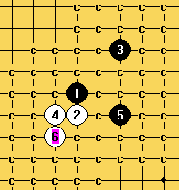

游星一个5手 白棋如何胜啊？天羽老师
首页
习题专区
#1 游星一个5手 白棋如何胜啊？天羽老师 作者：夏百萧 发表时间：2008-12-15 21:27:48
=======上图对应的爱五子棋谱代码如下，以便你拆解：========
h8h7j10g7j7g8g9f7e7
======================================================
#2 Re:游星一个5手 白棋如何胜啊？天羽老师 作者：无尽 发表时间：2008-12-15 21:39:19
直接8-i7必胜
9-f9,10-i8
9-i6,10-g6
［ 快乐天羽 于 2008-12-16 13:17:39 时奖励此帖[金币加 20 威望加1］
#3 Re:游星一个5手 白棋如何胜啊？天羽老师 作者：萧寒寒 发表时间：2008-12-16 10:19:09
通一打败7的
=======上图对应的爱五子棋谱代码如下，以便你拆解：========
h8g8j10g7g9i7j7h7
======================================================［ 快乐天羽 于 2008-12-16 13:18:16 时奖励此帖[金币加 20 威望加1］
#4 Re:游星一个5手 白棋如何胜啊？天羽老师 作者：快乐天羽 发表时间：2008-12-16 13:20:03
这样也可以
=======上图对应的爱五子棋谱代码如下，以便你拆解：========
h8h7j10g7j7g6g8i8j9j8
======================================================
=======上图对应的爱五子棋谱代码如下，以便你拆解：========
h8h7j10g7j7g6g9f7i7j6
======================================================
#5 Re:游星一个5手 白棋如何胜啊？天羽老师 作者：nara 发表时间：2008-12-16 18:58:37

这个5不难，这个6就可以胜。
#6 Re:游星一个5手 白棋如何胜啊？天羽老师 作者：笑笑笑笑 发表时间：2009-2-7 13:06:55
=======上图对应的爱五子棋谱代码如下，以便你拆解：========
h8h7j10g7j7g6j8j9i8g8g9
======================================================来试试这个下法吧.
#7 Re:游星一个5手 白棋如何胜啊？天羽老师 作者：笑笑笑笑 发表时间：2009-2-7 13:09:30
=======上图对应的爱五子棋谱代码如下，以便你拆解：========
h8h7j10g7j7g8g9i7j8j9i8f9i6
======================================================这个帮俺看下哈.
#8 Re:游星一个5手 白棋如何胜啊？天羽老师 作者：笑笑笑笑 发表时间：2009-2-7 13:12:46
=======上图对应的爱五子棋谱代码如下，以便你拆解：========
h8h9j6g8
======================================================想游星必败,白4直接这样下就行了哈.
#9 Re:游星一个5手 白棋如何胜啊？天羽老师 作者：失落刀 发表时间：2009-2-7 20:47:40
=======上图对应的爱五子棋谱代码如下，以便你拆解：========
h8h9j6g8i10
======================================================这个5不会杀。